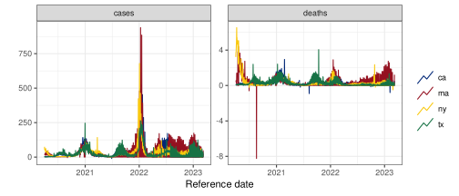
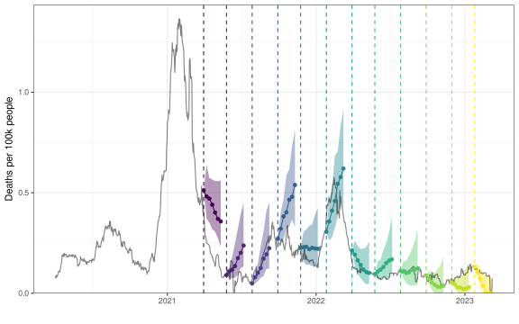
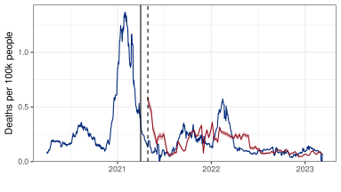
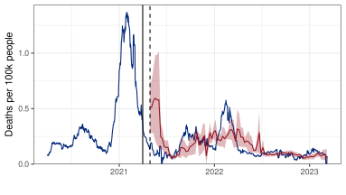
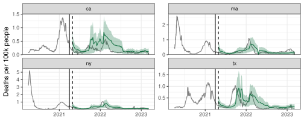
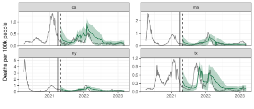
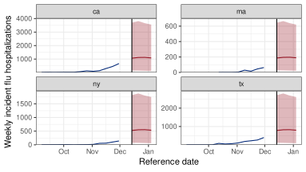

Forecasting With {epipredict} and Other Advanced Topics
MICOM Tooling Workshop 2025
David Weber, Nat DeFries
Adapted from slides by Alice Cima, Rachel Lobay, Daniel McDonald, Ryan Tibshirani, with huge thanks to Logan Brooks, Xueda Shen, and Dmitry Shemetov
12 August 2025
Outline
Fundamentals of Forecasting
{epipredict}Customizing
arx_forecaster()Build a Forecaster from Scratch
Advanced Topics
1 Fundamentals of Forecasting
Care with your data
- Data splitting
- Some data you see. You can use it to create your model: Training data.
- Some data you don’t see. It may arrive later, or you may hold it out to validate your process.
- Only training data can be used to create your model.
- Much more subtle than it sounds.
- Everything about your model must flow from this
- Choosing the model: AR vs ARX, number of lags to use
- Estimates of model parameters
- How much regularization to use
- Any transformations you make of your data
We’ve emphasized most of this already.
But that point about transformations is VERY important. And often overlooked.
Preprocessing correctly
- A standard proprecessing routine is to
scale()each of the predictors. - This requires calculating the mean and standard deviation on the training data.
- And using those values when you make predictions
- This is hard to do with standard
Roperations.
We didn’t save the means and variances.
We need them to process the test data.
We would also need to invert (postprocess) the predictions.
For example: undoing scaling to predict deaths not deaths per 100K population
{tidymodels}
The
{tidymodels}suite of packages is intended to handle this situation correctly.It’s written by programmers at Posit (the people behind
{tidyverse})It doesn’t work for panel data.
That’s what we need for Epidemiological Time Series
We’ve been working with their team to develop this functionality.
Anatomy of a forecaster
We should build up modular components
Be able to add/remove layers of complexity sequentially, not all at once
We should be able to make preprocessing independent of the model fitting
We should be able to postprocess the predictions
Preprocessor: do things to the data before model training
Trainer: train a model on data, resulting in a fitted model object
Predictor: make predictions, using a fitted model object
Postprocessor: do things to the predictions before returning
2 {epipredict}
{epipredict}
https://cmu-delphi.github.io/epipredict
Installation
What {epipredict} provides (i)
Basic and easy to use “canned” forecasters:
Baseline flat forecaster
Autoregressive forecaster (ARX)
Autoregressive classifier
CDC FluSight flatline forecaster
These are supposed to work easily
Handle lots of cases we’ve already seen
We’ll start here
What {epipredict} provides (ii)
A framework for creating custom forecasters out of modular components.
This is highly customizable, extends
{tidymodels}to panel dataGood for building a new forecaster from scratch
We’ll do an example at the end
There are four types of components:
Preprocessor: do things to the data before model training
Trainer: train a model on data, resulting in a fitted model object
Predictor: make predictions, using a fitted model object
Postprocessor: do things to the predictions before returning
Examples of pre-processing
EDA type stuff
- Making locations/signals commensurate (scaling)
- Dealing with revisions
- Detecting and removing outliers
- Imputing or removing missing data
Feature engineering
- Creating lagged predictors
- Day of Week effects
- Rolling averages for smoothing
- Lagged differences
- Growth rates instead of raw signals
- The sky’s the limit
Get some data
library(epidatr)
library(epiprocess)
library(epipredict)
cases <- pub_covidcast(
source = "jhu-csse",
signals = "confirmed_incidence_num",
time_type = "day",
geo_type = "state",
time_values = epirange(20200401, 20230401),
geo_values = "*") |>
select(geo_value, time_value, cases = value)
deaths <- pub_covidcast(
source = "jhu-csse",
signals = "deaths_incidence_num",
time_type = "day",
geo_type = "state",
time_values = epirange(20200401, 20230401),
geo_values = "*") |>
select(geo_value, time_value, deaths = value)
cases_deaths <- full_join(cases, deaths, by = c("time_value", "geo_value")) |>
as_epi_df()Pre-processing: data scaling
Scale cases and deaths by population and multiply by 100K
Scaled COVID cases and deaths
Pre-processing: smoothing
Smooth the data by computing 7-day averages of cases and deaths for each state
Scaled and smoothed COVID cases deaths

Pre-processing: fix outliers and negative values

Fit arx_forecaster on training set
Back to the ARX(1) model for COVID deaths: \(\quad \hat y_{t+28} = \hat\phi + \hat\phi_0 y_{t} + \hat\beta_0 x_{t}\)
Only focus on California (for now)
Using
{epipredict}
# split into train and test
ca <- cases_deaths |> filter(geo_value == "ca")
t0_date <- as.Date('2021-04-01')
train <- ca |> filter(time_value <= t0_date)
test <- ca |> filter(time_value > t0_date)
# fit ARX
epi_arx <- arx_forecaster(
epi_data = train |> as_epi_df(),
outcome = "deaths",
predictors = c("cases", "deaths"),
trainer = linear_reg(),
args_list = arx_args_list(lags = 0, ahead = 28, quantile_levels = c(0.1, 0.9))
)arx_forecaster output
- A workflow object which can be used any time in the future to create forecasts (
$epi_workflow).- All necessary preprocessing; both the sequence of steps, and any necessary statistics
- The fitted model object
- The sequence of steps for postprocessing
- A forecast (point prediction + interval) for 28 days after the last available time value in the data (
$predictions).
arx_forecaster output
══ A basic forecaster of type ARX Forecaster ═══════════════════════════════════This forecaster was fit on 2025-08-08 11:19:20.Training data was an <epi_df> with:• Geography: state,• Time type: day,• Using data up-to-date as of: 2025-08-08 11:18:52.• With the last data available on 2021-04-01── Predictions ─────────────────────────────────────────────────────────────────A total of 1 prediction is available for• 1 unique geographic region,• At forecast date: 2021-04-01,• For target date: 2021-04-29,Extract fitted object
══ Epi Workflow [trained] ══════════════════════════════════════════════════════Preprocessor: RecipeModel: linear_reg()Postprocessor: Frosting── Preprocessor ────────────────────────────────────────────────────────────────7 Recipe steps.1. step_epi_lag()2. step_epi_lag()3. step_epi_ahead()4. step_naomit()5. step_naomit()6. step_training_window()7. check_enough_data()── Model ───────────────────────────────────────────────────────────────────────
Call:
stats::lm(formula = ..y ~ ., data = data)
Coefficients:
(Intercept) lag_0_cases lag_0_deaths
0.075387 0.009953 0.201329 ── Postprocessor ───────────────────────────────────────────────────────────────5 Frosting layers.1. layer_predict()2. layer_residual_quantiles()3. layer_add_forecast_date()4. layer_add_target_date()5. layer_threshold()$epi_workflow
Contains information on
Pre-processing steps automatically performed by
arx_forecaster(e.g. compute lags of the predictors)Fitted model
Post-processing steps automatically performed by
arx_forecaster(e.g. compute quantiles)
Extract predictions
# A tibble: 1 × 5
geo_value .pred .pred_distn forecast_date target_date
<chr> <dbl> <qtls(3)> <date> <date>
1 ca 0.218 [0.218] 2021-04-01 2021-04-29 Note
.pred_distnis actually a “distribution”, parameterized by its quantilesarx_forecasterestimates the quantiles in a different way thanlm
Extract predictions
We can extract the distribution into a “long” epi_df
# A tibble: 3 × 6
geo_value .pred forecast_date target_date .pred_distn_value
<chr> <dbl> <date> <date> <dbl>
1 ca 0.218 2021-04-01 2021-04-29 0.137
2 ca 0.218 2021-04-01 2021-04-29 0.218
3 ca 0.218 2021-04-01 2021-04-29 0.300
# ℹ 1 more variable: .pred_distn_quantile_level <dbl>or into a “wide” epi_df
Predict with fitted ARX (split-sample)
arx_forecasterfits a model to the training set, and outputs only one prediction (for time \(t_0+h\)).To get predictions for the test set:
An `epi_df` object, 707 x 6 with metadata:
* geo_type = state
* time_type = day
* as_of = 2025-08-08 11:18:52.812874
# A tibble: 707 × 6
geo_value time_value .pred .pred_distn forecast_date target_date
<chr> <date> <dbl> <qtls(3)> <date> <date>
1 ca 2021-04-02 0.213 [0.213] 2021-04-01 2021-04-29
2 ca 2021-04-03 0.202 [0.202] 2021-04-01 2021-04-29
3 ca 2021-04-04 0.197 [0.197] 2021-04-01 2021-04-29
4 ca 2021-04-05 0.201 [0.201] 2021-04-01 2021-04-29
5 ca 2021-04-06 0.199 [0.199] 2021-04-01 2021-04-29
6 ca 2021-04-07 0.195 [0.195] 2021-04-01 2021-04-29
7 ca 2021-04-08 0.195 [0.195] 2021-04-01 2021-04-29
8 ca 2021-04-09 0.196 [0.196] 2021-04-01 2021-04-29
9 ca 2021-04-10 0.208 [0.208] 2021-04-01 2021-04-29
10 ca 2021-04-11 0.213 [0.213] 2021-04-01 2021-04-29
# ℹ 697 more rowsPredict with ARX (when re-fitting)
In practice, if we want to re-train the forecasters as new data arrive, we fit and predict combining
arx_forecasterwithepix_slideFrom now on, we will only used versioned data, and make predictions once a week
Predict with ARX (re-fitting on trailing window)
h <- 28 # horizon
w <- 120 + h # trailing window length
# Specify the forecast dates
fc_time_values <- seq(from = t0_date, to = as.Date("2023-02-09"), by = "1 week")
# Slide the arx_forecaster over the epi_archive
pred_arx <- ca_archive |> epix_slide(
~ arx_forecaster(epi_data = .x,
outcome = "deaths",
predictors = c("cases", "deaths"),
trainer = linear_reg(),
args_list = arx_args_list(lags = 0, ahead = h, quantile_levels = c(0.1, 0.9))
)$predictions |>
pivot_quantiles_wider(.pred_distn),
.before = w,
.versions = fc_time_values
)Predict with ARX
Note (window length)
We set \(w = 120 + h\) to match the window size of the ARX model we fitted manually.
When considering a window from \(t-w\) to \(t\), we had access to all outcomes in that window, and to all predictors between \(t-w-h\) and \(t-h\).
(That’s because we lagged \(x\) before applying the window.)
So we were “cheating” by saying that the trailing window had length \(w=120\), as its actual size was \(120+h\)!
Note (all past)
The method fitting on all past data up to the forecasting date can be implemented by setting:
.before = Inf in epix_slide().
Predict with ARX (re-fitting on trailing window)
# A tibble: 98 × 8
version geo_value .pred forecast_date target_date `0.1` `0.5` `0.9`
* <date> <chr> <dbl> <date> <date> <dbl> <dbl> <dbl>
1 2021-04-01 ca 0.396 2021-03-31 2021-04-28 0.192 0.396 0.599
2 2021-04-08 ca 0.395 2021-04-07 2021-05-05 0.197 0.395 0.594
3 2021-04-15 ca 0.403 2021-04-14 2021-05-12 0.211 0.403 0.595
4 2021-04-22 ca 0.312 2021-04-21 2021-05-19 0.142 0.312 0.482
5 2021-04-29 ca 0.261 2021-04-28 2021-05-26 0.0879 0.261 0.433
6 2021-05-06 ca 0.209 2021-05-05 2021-06-02 0.0238 0.209 0.394
7 2021-05-13 ca 0.158 2021-05-12 2021-06-09 0 0.158 0.345
8 2021-05-20 ca 0.118 2021-05-19 2021-06-16 0 0.118 0.296
9 2021-05-27 ca 0.0775 2021-05-26 2021-06-23 0 0.0775 0.239
10 2021-06-03 ca 0.0552 2021-06-02 2021-06-30 0 0.0552 0.137
# ℹ 88 more rowsPredict with ARX (re-fitting on trailing window)

MAE MASE Coverage
0.07889637 264.5207 0.4285714Customizing arx_forecaster()
Modify
predictorsto add/drop predictorse.g. drop
deathsfor regression with a lagged predictor, or dropcasesto get AR modeldefault:
predictors = outcome
Customizing arx_forecaster()
- Modify
arx_args_listto change lags, horizon, quantile levels, …
arx_args_list(
lags = c(0L, 7L, 14L),
ahead = 7L,
n_training = Inf,
forecast_date = NULL,
target_date = NULL,
adjust_latency = c("none", "extend_ahead", "extend_lags", "locf"),
warn_latency = TRUE,
quantile_levels = c(0.05, 0.95),
symmetrize = TRUE,
nonneg = TRUE,
quantile_by_key = character(0L),
check_enough_data_n = NULL,
check_enough_data_epi_keys = NULL,
...
)Customizing arx_forecaster
Change predictors: doctor visits instead of cases
dv_archive <- pub_covidcast(
source = "doctor-visits",
signals = "smoothed_adj_cli",
time_type = "day",
geo_type = "state",
time_values = epirange(20200401, 20230401),
geo_values = "*",
issues = epirange(20200401, 20230401)) |>
select(geo_value, time_value, version = issue, doctor_visits = value) |>
arrange(geo_value, time_value) |>
as_epi_archive(compactify = FALSE)Customizing arx_forecaster
Change predictors: doctor visits instead of cases
pred_arx_hosp <- ca_archive_dv |> epix_slide(
~ arx_forecaster(epi_data = .x,
outcome = "deaths",
predictors = c("deaths", "doctor_visits"),
trainer = linear_reg(),
args_list = arx_args_list(lags = 0, ahead = 28, quantile_levels = c(0.1, 0.9))
)$predictions |>
pivot_quantiles_wider(.pred_distn),
.before = w,
.versions = fc_time_values
)Predictions (doctor visits instead of cases in predictor set)

MAE MASE Coverage
0.06040473 202.5227 0.5510204Customizing arx_forecaster
Add more lags
pred_arx_more_lags <- ca_archive_dv |> epix_slide(
~ arx_forecaster(epi_data = .x,
outcome = "deaths",
predictors = c("deaths", "doctor_visits"),
trainer = linear_reg(),
args_list = arx_args_list(
lags = c(0, 7, 14),
ahead = 28, quantile_levels = c(0.1, 0.9)
)
)$predictions |>
pivot_quantiles_wider(.pred_distn),
.before = w,
.versions = fc_time_values
)Predictions (more lags)

MAE MASE Coverage
0.077735 260.6269 0.3367347Customizing arx_forecaster
Multiple horizons
forecast_times <- seq(from = t0_date, to = as.Date("2023-02-23"), by = "1 month")
pred_h_days_ahead <- function(epi_archive, ahead = 7) {
epi_archive |>
epix_slide(
~ arx_forecaster(epi_data = .x,
outcome = "deaths",
predictors = c("deaths", "doctor_visits"),
trainer = linear_reg() |> set_engine("lm"),
args_list = arx_args_list(
lags = 0,
ahead = ahead,
quantile_levels = c(0.1, 0.9))
)$predictions |>
pivot_quantiles_wider(.pred_distn),
.before = w,
.versions = forecast_times
)
}
h <- c(7, 14, 21, 28)
forecasts <- bind_rows(map(h, ~ pred_h_days_ahead(ca_archive_dv, ahead = .x)))Predictions (multiple horizons)
3 Advanced Customizations
Changing trainer
Modify trainer to use a model that is not lm (default)
- e.g.
trainer = rand_forest() - can use any
{parsnip}models, see list {epipredict}has a number of custom engines as well
Changing trainer
pred_arx_rf <- ca_archive_dv |>
epix_slide(
~ arx_forecaster(epi_data = .x,
outcome = "deaths",
predictors = c("deaths", "doctor_visits"),
trainer = parsnip::rand_forest(mode = "regression"), # defaults to ranger
args_list = arx_args_list(
lags = 0,
ahead = 28,
quantile_levels = c(0.1, 0.9))
)$predictions |>
pivot_quantiles_wider(.pred_distn),
.before = w,
.versions = fc_time_values
)Predictions (trained using random forest)
 MAE MASE Coverage
0.08051714 269.9548 0.1122449Warning!
Random forests has really poor coverage here.
The reason is the way intervals are calculated.
Can change engine to get better coverage:
specify engine = "grf_quantiles" in the rand_forest call
Predictions from a random forest with grf_quantiles
 MAE MASE Coverage
0.08926055 299.2694 0.3877551Geo-pooling
- When we observe data over time from multiple locations (e.g. states or counties).
We could
- Estimate coefficients separately for each location (as we have done so far), or
- Fit one model using all locations together at each time point (geo-pooling).
- Estimated coefficients will not be location specific.
- We will now pool data from all US states to make predictions.
Geo-pooling
pred_arx_geo_pool <- usa_archive_dv |> epix_slide(
~ arx_forecaster(epi_data = .x,
outcome = "deaths",
predictors = c("deaths", "doctor_visits"),
args_list = arx_args_list(lags = 0, ahead = 28, quantile_levels = c(0.1, 0.9))
)$predictions |>
pivot_quantiles_wider(.pred_distn),
.before = w,
.versions = fc_time_values
)Note: geo-pooling is the default in epipredict
Predictions (geo-pooling, \(h=28\))

MAE MASE Coverage
CA 0.1342220 450.0143 0.8673469
MA 0.1200344 296.9929 0.8041237
NY 0.1328566 327.4008 0.8556701
TX 0.1601115 343.0498 0.8350515Predict without geo-pooling
pred_arx_no_geo_pool <- function(archive, ahead = 28, lags = 0){
archive |>
epix_slide(
~ group_by(.x, geo_value) |>
group_map(.keep = TRUE, function(group_data, group_key) {
arx_forecaster(epi_data = group_data,
outcome = "deaths",
predictors = c("deaths", "doctor_visits"),
trainer = linear_reg() |> set_engine("lm"),
args_list = arx_args_list(
lags = lags,
ahead = ahead,
quantile_levels = c(0.1, 0.9))
)$predictions |>
pivot_quantiles_wider(.pred_distn)
}) |>
list_rbind(),
.before = w,
.versions = fc_time_values
)}
pred_no_geo_pool_28 <- pred_arx_no_geo_pool(usa_archive_dv$DT |>
filter(geo_value %in% c("ca", "ma", "ny", "tx")) |>
as_epi_archive())Predictions (without geo-pooling, \(h=28\))

MAE MASE Coverage
CA 0.06040473 202.5227 0.5510204
MA 0.33532528 823.3607 0.3367347
NY 0.21072571 516.3337 0.5408163
TX 0.14144058 306.2029 0.4285714Geo-pooling or not?
Geo-pooled predictions tend to be more stable
Generally with wider intervals (and better coverage)
Meanwhile, predictions from state-wise models tend to be more volatile
The extent to which this occurs differs based on the horizon.
Previously we studied \(h=28\). What happens for \(h=7\)?
Predictions (geo-pooling, \(h = 7\))

MAE MASE Coverage
CA 0.09676644 320.9851 0.9081633
MA 0.09278403 234.9664 0.8350515
NY 0.09029822 222.3488 0.9381443
TX 0.11307616 239.1528 0.8659794Predictions (without geo-pooling, \(h=7\))

MAE MASE Coverage
CA 0.03971988 131.7553 0.6734694
MA 0.06579422 168.3530 0.5714286
NY 0.05005395 124.5359 0.6836735
TX 0.05756194 122.0824 0.7040816What are these ARX intervals?
{epipredict}takes quantiles of training residuals to form its prediction intervals- In comparison to traditional (parametric) intervals from
lm(), this is more flexible - It can in principle adapt to asymmetric or heavy-tailed error distributions
Taking quantiles of training residuals can be problematic if the model is overfit.
Quantile regression provides an alternative, wherein we estimate these quantiles directly
Technically, grf_quantiles was using Quantile Loss with Random Forests
Quantile regression
Now we directly target conditional quantiles of the outcome over time.
Estimating tail quantiles requires more data, so
unsuitable for settings with small training set (e.g. trailing window on one state)
can benefit by combination with geo-pooling (much more data to train on)
library(quantreg)
pred_qr_geo_pool <- usa_archive_dv |>
epix_slide(
~ arx_forecaster(epi_data = .x,
outcome = "deaths",
predictors = c("deaths", "doctor_visits"),
trainer = quantile_reg(),
args_list = arx_args_list(
lags = 0,
ahead = 28,
quantile_levels = c(0.1, 0.9))
)$predictions |>
pivot_quantiles_wider(.pred_distn),
.before = w,
.versions = fc_time_values
)Predictions (geo-pooling + quantile regression, \(h=28\))
 MAE MASE Coverage
CA 0.1447173 485.2027 0.8877551
MA 0.1214715 300.5488 0.7216495
NY 0.1384252 341.1235 0.7525773
TX 0.1604103 343.6901 0.7835052Predictions (geo-pooling + linear regression, \(h=28\))
 MAE MASE Coverage
CA 0.1342220 450.0143 0.8673469
MA 0.1200344 296.9929 0.8041237
NY 0.1328566 327.4008 0.8556701
TX 0.1601115 343.0498 0.83505154 Build a forecaster from scratch
Build a forecaster from scratch
So far, we performed manual pre-processing,
and then relied on a canned forecaster
to automatically perform more pre-processing, training, predicting, and post-processing.
What if we want more direct control on each single step?
Under the hood of arx_forecaster()
# A preprocessing "recipe" that turns raw data into features / response
rec <- epi_recipe(ca) |>
step_epi_lag(cases, lag = c(0, 7, 14)) |>
step_epi_lag(deaths, lag = c(0, 7, 14)) |>
step_epi_ahead(deaths, ahead = 28) |>
step_epi_naomit()
# Training engine
eng <- quantile_reg(quantile_levels = c(.1, .5, .9))
# A post-processing routine describing what to do to the predictions
frost <- frosting() |>
layer_predict() |>
layer_threshold(.pred, lower = 0) |> # predictions / intervals should be non-negative
layer_add_target_date() |>
layer_add_forecast_date()
# Bundle up the preprocessor, training engine, and postprocessor
# We use quantile regression
ewf <- epi_workflow(rec, eng, frost)
# Fit it to data (we could fit this to ANY data that has the same format)
trained_ewf <- fit(ewf, data = ca)
# Make predictions from the end of our training data
# we could have made predictions using the same model on ANY test data
fcasts <- forecast(trained_ewf)Predicting influenza hospitalizations
- Current task: predict influenza hospitalizations for all states + DC + PR.
- Forecasts submitted to CDC Flusight Forecast Hub
Specifically:
- From November 20, 2024 until May 31, 2025
- Every Wednesday at 11pm EDT
- Predict 0, 1, 2, 3 epiweeks ahead
- Point forecast + 23 quantiles
- Response is NHSN Weekly Hospitalizations
From here on, the emphasis is “how” to make these adjustments. Ran out of time to evaluate!
Aside: data issues
Hospital reporting was down for a period over the summer.
The current data doesn’t seem to match the historical data very well.
We don’t know if we trust the data yet enough
It may get revised significantly
Let’s do something super simple, until we’re more confident
- Climatological forecaster
- For a given epiweek, predict the historical quantiles
- Make adjustments to address the fact that we have some new data
- Privledge the history
Think like the weather: “what is the typical weather in February in Georgia, that’s our forecast”
Climatological forecaster
climatological_model <- function(epi_data, forecast_date, ahead, window_size = 3, geo_agg = FALSE) {
forecast_week <- epiweek(forecast_date)
last_date_data <- max(epi_data$time_value)
probs <- c(.1, .5, .9)
filtered <- epi_data |>
filter(
(season != "2020/21") & (season != "2021/22"), # drop weird years
# keep data either within the window, or within the past window weeks
(abs(forecast_week + ahead - epiweek) <= window_size) |
(last_date_data - time_value <= window_size * 7)
)
if (geo_agg) {
filtered <- filtered |>
left_join(state_census |> select(geo_value = abbr, pop), by = "geo_value") |>
mutate(nhsn = nhsn / pop * 1e5) %>%
select(geo_value, epiweek, epiyear, season, season_week, nhsn, pop)
} else {
filtered <- filtered |> group_by(geo_value)
}
naive_preds <- filtered |> reframe(enframe(
quantile(nhsn, probs = probs, na.rm = TRUE, type = 8), name = "quantile"
)) |>
mutate(
forecast_date = forecast_date,
target_end_date = forecast_date + ahead * 7,
quantile = as.numeric(sub("%", "", quantile)) / 100,
value = pmax(0, value)
)
if (geo_agg) {
naive_preds <- naive_preds |>
expand_grid(filtered |> distinct(geo_value, pop)) |>
mutate(value = value * pop / 1e5) |>
select(-pop) |>
select(geo_value, forecast_date, target_end_date, quantile, value) |>
arrange(geo_value, forecast_date, target_end_date)
}
naive_preds |> ungroup() |> mutate(value = pmax(0, value))
}Climate predictions for this week
Almost our production forecaster (helper functions)
roll_modular_multivec <- function(col, index, window_size, modulus = 53) {
tib <- tibble(col = col, index = index) |>
arrange(index) |>
tidyr::nest(data = col, .by = index)
out <- double(nrow(tib))
for (iter in seq_along(out)) {
entries <- (iter - window_size):(iter + window_size) %% modulus
entries[entries == 0] <- modulus
out[iter] <- with(
purrr::list_rbind(tib$data[entries]),
median(col, na.rm = TRUE)
)
}
tibble(index = unique(tib$index), climate_pred = out)
}
climatological_feature <- function(epi_data, window_size = 3) {
epi_data |>
filter(season != "2020/21", season != "2021/22") |> # drop weird years)
select(nhsn, epiweek, geo_value) |>
reframe(roll_modular_multivec(nhsn, epiweek, window_size, 53), .by = geo_value) |>
mutate(climate_pred = pmax(0, climate_pred)) |>
rename(epiweek = index)
}Almost our production forecaster (data munging)
climate <- climatological_feature(climate_data |> select(nhsn, epiweek, season, geo_value))
nssp <- pub_covidcast( # time_value is first day of the epiweek
source = "nssp",
signal = "pct_ed_visits_influenza",
time_type = "week",
geo_type = "state",
geo_values = "*"
) |>
select(geo_value, time_value, nssp = value)
flu_data <- hhs_v_nhsn |>
select(time_value, geo_value, hhs = new_source) |>
left_join(nssp |> mutate(time_value = time_value + 6), by = join_by(geo_value, time_value))
n_geos <- n_distinct(flu_data$geo_value)
max_time_value <- max(flu_data$time_value)
empty_data <- tibble(
time_value = rep(max_time_value + days(1:3 * 7), each = n_geos),
geo_value = rep(unique(flu_data$geo_value), times = 3),
nssp = NA, hhs = NA
)
flu_data <- flu_data |>
filter(month(time_value) %in% 8:12, year(time_value) %nin% c(2020, 2021)) |>
add_row(empty_data) |>
mutate(epiweek = epiweek(time_value)) |>
left_join(climate, by = join_by(geo_value, epiweek)) |>
select(!epiweek) |>
filter(geo_value %nin% c("as", "vi", "gu", "mp", "usa")) |>
arrange(geo_value, time_value) |>
as_epi_df()Almost our production forecaster (workflow)
r <- epi_recipe(flu_data) |>
step_population_scaling(
hhs, nssp,
df = epidatasets::state_census,
df_pop_col = "pop",
create_new = FALSE,
rate_rescaling = 1e5,
by = c("geo_value" = "abbr")) |>
recipes::step_mutate(hhs = hhs^(1/4), nssp = nssp^(1/4), climate_pred = climate_pred^(1/4)) |>
step_epi_lag(hhs, lag = c(0, 7, 14)) |>
step_epi_lag(nssp, lag = c(0, 7, 14)) |>
step_epi_ahead(hhs, ahead = 21) |>
step_epi_ahead(climate_pred, ahead = 21, role = "predictor") |>
step_epi_naomit()
e <- quantile_reg(quantile_levels = c(0.1, 0.25, 0.5, 0.75, 0.9))
f <- frosting() |>
layer_predict() |>
layer_threshold(.pred, lower = 0)
ewf <- epi_workflow(r, e, f)
trained_ewf <- ewf |> fit(flu_data)
preds <- forecast(trained_ewf) |>
left_join(epidatasets::state_census |> select(pop, abbr), join_by(geo_value == abbr)) |>
mutate(
.pred = .pred^4 * pop / 1e5,
forecast_date = time_value + days(7),
target_date = forecast_date + days(14),
time_value = NULL,
pop = NULL
)Plot our forecasts

5 Advanced Topics
Ensembling
Instead of choosing one model, we can combine the predictions from multiple base models. Ensemble types:
untrained: combine base models, agnostic to past performance
trained: weight base models, accounting for past performance
Simplest untrained method: simple average of base model forecasts
\[ \hat{y}^{\text{avg}}_{t+h|t} = \frac{1}{p} \sum_{j=1}^p \hat{y}^j_{t+h|t} \]
A more robust option: simple median of base model forecasts
\[ \hat{y}^{\text{med}}_{t+h|t} = \mathrm{median}\Big\{ \hat{y}^j_{t+h|t} : j = 1,\dots,p \Big\} \]
Example from the Covid-19 Forecast Hub

Two key goals of ensembling
1 Compete-with-best: ensemble should have accuracy competitive with best individual constituent model
- Robustness-over-all: ensemble should have greater robustness than any individual constituent model
Typically these are hard to accomplish simultaneously, and untrained methods excel at point 2, whereas trained methods can achieve point 1
Linear stacking
One of the simplest trained ensemble methods is to directly fit a weighted combination of base forecasts to optimize accuracy (MSE, MAE, etc.), often called linear stacking: e.g., to form the forecast at time \(t\), we solve
\[\begin{alignat*}{2} &\min_{w \in \R^p} && \hspace{-6pt} \sum_{s=t_0+1}^t \bigg( y_s - \sum_{j=1}^p w_j \cdot \hat{y}^j_{s|s-h} \bigg)^2 \\ &\st \quad && \sum_{j=1}^p w_j = 1, \;\;\text{and} \;\; w_j \geq 0, \; j=1,\dots,p \end{alignat*}\]
then use
\[ \hat{y}^{\text{stack}}_{t+h|t} = \sum_{j=1}^p \hat{w}^t_j \cdot \hat{y}^j_{t+h|t} \]
Note that the stacking optimization problem uses forward-looking predictions (as in time series cross-validation)
Recalibration
We have seen that prediction intervals often have empirical coverage << nominal coverage, e.g., our 80% predictive intervals in practice cover \(\approx\) 60% of the time
Recalibration methods aim at adjusting the intervals so that nominal coverage \(\approx\) empirical coverage
Quantile tracking
Quantile tracking is a method for producing calibrated prediction intervals from base forecasts and scores. In the simplest case, we can take the score to be absolute error of point forecasts:
\[e_t = |y_t - \hat y_{t|t-1}|\]
Let \(\hat q_{t}^{1-\alpha}\) be a predicted level \(1-\alpha\) quantile of the distribution of \(e_t\)
Define \(I_{t|t-1}^{1-\alpha} = [\hat{y}_{t|t-1} - \hat{q}_t^{1-\alpha}, \; \hat{y}_{t|t-1} + \hat{q}_t^{1-\alpha}]\). Note that
\[ e_t \leq \hat{q}_t^{1-\alpha} \iff y_t \in I_{t|t-1}^{1-\alpha} \]
Therefore we the reduced the problem of producing prediction intervals \(I_{t|t-1}^{1-\alpha}\) to one of tracking a quantile of \(e_t\)
Quantile updates
We begin with some estimate \(\hat{q}_{t_0+1}^{1-\alpha}\) based on a burn-in set. Then repeat the following updates as \(t\) increases, for a step size \(\eta > 0\):
\[\hat q_{t+1}^{1-\alpha} = \begin{cases} \hat q_{t}^{1-\alpha} + \eta(1-\alpha) \quad \text{if } y_t\notin I_{t|t-1}^{1-\alpha} \\ \hat q_{t}^{1-\alpha} - \eta\alpha \quad \quad \quad \,\,\, \text{if } y_t\in I_{t|t-1}^{1-\alpha} \end{cases}\]
In words:
- if the latest interval does not cover, then we increase the quantile (make the next interval wider),
- otherwise we decrease the quantile by (make the next interval narrower).
This method has the following guarantee:
\[ \Bigg| \frac{1}{T} \sum_{t=t_0+1}^{t_0+T} 1 \big\{ y_t \in I_{t|t-1}^{1-\alpha} \big\} - (1-\alpha) \Bigg| \leq \frac{b/\eta + 1}{T} \]
where \(b\) is a bound on the errors (largest error possible/observable).
Multi-horizon smoothing
Forecasting — cmu-delphi/micom-tooling-workshop-2025